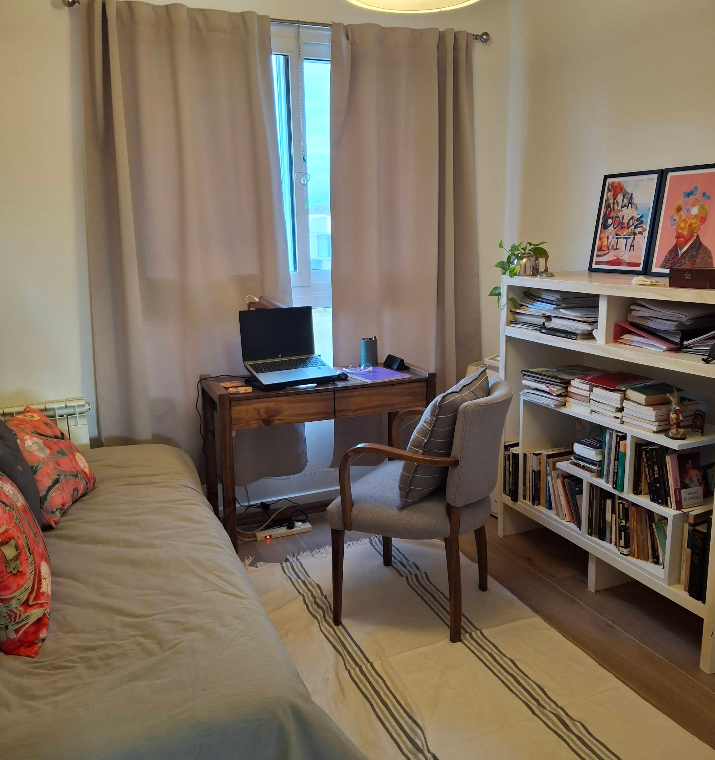

Lic. Elizabeth
Orlando
Psicoanálisis · Nueva Medicina · Biodescodificación
Acompañamiento psicoterapéutico con más de 15 años de experiencia en adultos y adolescentes. Un espacio para sanar, crecer y encontrar tu libertad interior.
Reservar consulta
Mi objetivo es que mis pacientes sean más libres, autoconscientes y, en definitiva, más felices.
experiencia
Un enfoque integral
del bienestar psíquico
Soy Licenciada en Psicología con más de 15 años dedicados al acompañamiento de adultos y adolescentes. Mi formación en psicoanálisis me brinda una base profunda para comprender el mundo interno de cada persona.
Como Psicooncóloga, acompaño a quienes atraviesan el impacto emocional de las enfermedades físicas. Integro herramientas de la nueva medicina y psicología — en la línea del Dr. Dispenza, Villordo, Lipton y Braden — con técnicas de Biodescodificación, para un abordaje verdaderamente completo.
Mi consulta está ubicada en Ingeniero Maschwitz, dentro del Barrio Los Arenales, y brindo atención tanto presencial como virtual.
¿En qué puedo
ayudarte?
Angustia & Ansiedad
Acompañamiento en el tratamiento de la ansiedad, ataques de pánico y estados de angustia profunda, con herramientas psicoanalíticas y modernas.
Duelo & Pérdidas
Proceso de elaboración del duelo ante pérdidas afectivas, laborales o de salud. Un espacio de escucha y acompañamiento genuino.
Psicooncología
Apoyo psicológico para pacientes con diagnósticos oncológicos y sus familias. Enfermedades autoinmunes. Manejo emocional del impacto de la enfermedad.
Biodescodificación
Identificación de los conflictos emocionales que pueden estar en la raíz de síntomas físicos o bloqueos psicológicos.
Crecimiento Personal
Te acompaño a ser tu mejor versión.
Atención a Adolescentes
Espacio especializado para el acompañamiento de jóvenes en sus procesos de identidad, vínculos y malestar emocional.
Meditación y Respiración consiente
Prácticas para cultivar la calma y paz interior.
Víctimas de Maltrato, Violencia y Abuso
Atención a victimas de violencia física, psicológica, sexual, económica. Trabajamos para sanar tu herida y para que te enamores de vos y de tu vida.
El camino hacia
tu libertad interior
-
01
Primera consulta sin compromiso
Un espacio inicial para conocernos, comprender tu situación y definir juntos el camino a seguir.
-
02
Abordaje personalizado
Cada persona es única. Integro distintas herramientas según lo que cada proceso requiera.
-
03
Integración mente–cuerpo
Trabajo en la conexión entre el malestar emocional y sus manifestaciones físicas.
-
04
Acompañamiento sostenido
Estoy presente en cada etapa del proceso, con presencialidad o a distancia según tu necesidad.
"El objetivo no es solo aliviar el síntoma, sino que cada persona pueda comprenderse, elegirse y vivir con mayor plenitud."— Lic. Elizabeth Orlando